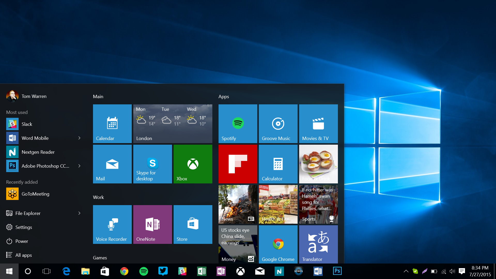

Majoritatea oamenilor au auzit de aceste doua sisteme de operare, insa destul de putini stiu avantajele si dezavantajele acestora. Cunoscand aceste aspecte veti putea alege sistemul de operare potrivit in functie de necesitati.
Inainte de a incepe confruntarea trebuie sa intelegem ca termenul de "Linux" nu se refera la un singur sistem de operare asa cum se refera "Windows". Linux cuprinde mai multe distributii. Fiecare distributie este o modficare a unei variante de baza si de aceea multe dintre ele chiar seamana destul de mult aparent. Ca si Windows-ul fiecare distribuite de Linux este imbunatatita prin update-uri si lansari de noi versiuni. De asemenea Linux este open-source (putem modifica aproape orice din sistemul de operare si ne puteam crea propria versiune de Linux) in timp ce Windows este closed-source.
• PROGRAME, COMPATIBILITATE SI PUTERE
Cei mai multi producatori dezvolta softuri pentru Windows. Daca ne cumparam o imprimanta, un mouse, o tastatura sau orice dispozitiv care poate fi conectat la PC, avem sanse foarte mici sa avem suport oficial pentru Linux. Totusi o foarte mare parte dintre dispozitivele cu suport pentru Windows functioneaza exact la fel de bine si pe Linux, insa uneori pot fi necesare cunostinte mai elevate in utilizarea unui sistem de operare pentru instalarea dispozitivului si de asemenea va necesita mai mult timp fata de sistemul de operare dezvoltat de Microsoft. Trebuie sa tinem totusi cont ca desi putem obtine functionalitate perfecta, multe dintre caracteristicile produsului pot fi greu de accesat in unele cazuri, fiind deseori necesare serii de comenzi in "dreptunghiurile alea cu mult scris in ele" numite Terminal sau Command Line. In Linux intr-un astfel de Terminal avem libertatea de a face orice, de la instalarea de programe pana la pornirea unui atac DDOS catre un site la alegerea noastra, insa o comanda gresita si sistemul nostru devine inutilizabil.
Terminalul din Linux
Windows-ul are de asemenea un Command Line care insa este mult inferior celui din Linux. Acesta nu ne ofera multe comenzi folositoare pentru majoritatea utilizatorilor, insa posibilitatea de a crea daune sistemului de operarea este semnificativ redusa fata de Terminalul din Linux.
Command prompt-ul din Windows
• SUPORT SI MENTENANTA
Daca intampinati probleme pe Linux si cautati pe orice motor de cautare cu siguranta veti mai gasi un utilizator cu aceeasi problema si veti gasi de asemenea utilizatori care incearca sa il ajute. Problema este ca explicatiile nu sunt intotdeauna accesibile pentru toti si deoarece Linux-ul este usor de modificat, pasii necesari pot diferi de la o distribuite la alta, existand posiblitatea de a nu gasi informatiile necesare rezolvarii problemei. In cazul in care o persoana foloseste Windows si are o problema sau intrebare aceasta va gasi tutoriale mult mai usor de urmarit, multe dintre ele fiind publicate chiar de Microsoft sau firmele de care apartin softurile cu care aveti probleme.
Din punctul de vedere al mentenantei Linux este castigator. Desi ultimele versiuni de Windows (7,8,8.1,10) sunt mult mai "rezistente" in timp fata de cele precedente care necesitau reinstalare la aproximativ 2 ani, daca instalam/dezinstalam multe programe viteza sistemului de operare scade in special pe sistemele cu performante scazute. Totusi exista solutii pentru mentinerea performantei sistemului in timp, dar acest lucru nu este necesar si in Linux. Sistemul open-source, neavand atat de multe efecte vizuale si fiind mai simplu, tinde sa se miste mai repede decat concurentul sau, iar performanta sa nu scade in timp. Diferenta de performanta poate varia dramatic in functie de performanta componentelor si de gradul de intretinere a Windowsului.
• USURINTA IN UTILIZARE
Aceasta este categoria in care Linux-ul pierde cel mai mult in fata concurentului sau. Microsoft produce Windows din 1985, iar interfata sa se bazeaza pe aceeasi idee inca de atunci. Desi exista distributii de Linux pentru utilizatorii incepatori (Ubuntu, Linux Mint, Elementary OS, etc), majoritatea oamenilor sunt familiarizati cu interfata Windows, iar cei care nu sunt pot invata imediat, interfata sistemului de operare de la Microsoft fiind intuitiva in general.

Desktop-ul din Windows 10
Desktop-ul din Linux Mint 18
• SECURITATE
Probabil motivul principal pentru care expertii in IT prefera Linux. Windows ofera drepturi de administrator permanent oricarui utilizator care are posibilitatea de a le avea. Linux-ul nu ofera prea multa putere utilizatorului, pentru fiecare cerere de drepturi elevate fiind necesara introducerea parolei de utilizator. Microsoft a incercat introducerea UAC (User Account Control) pentru a obtine rezultate similare, insa eficienta acestuia s-a dovedit a fi nesatisfacatoare. Prin acest aspect sistemul cu Linux este mult mai protejat in cazul unui virus. De asemenea, deoarece majoritatea programelor sunt facute pentru Windows, si majoritatea virusilor sunt creati pentru acesta. La fel si in cazul atacurilor cibernetice. Sunt mai multi utilizatori de Windows decat de Linux asa ca acestea tintesc sistemul de operare creat de Microsoft pentru a produce cat mai multe victime.
• CONCLUZIE
Daca va asteptati sa gasiti aici un castigator clar, va trebui sa va dezamagesc. Cele doua sisteme de operare au avantaje si dezavantaje. Daca aveti timpul si rabdarea de a invata sa folositi Linux la potentialul sau maxim veti avea libertatea de a controla si utiliza fiecare caracteristica a PC-ului, insa cu riscul de a fi nevoit sa cautati pe internet (cel putin la inceput) cum sa efectuati lucruri care in Windows vi se par banale. Cu Windows veti putea folosi PC-ul fara prea mari batai de cap, insa va trebui sa va obisnuiti cu limitarile impuse de Microsoft. Windows-ul se adreseaza utilizatorilor care au nevoie de PC pentru activitatile zilnice, in timp ce Linux se adreseaza utilizatorilor care vor sa testeze atat propriile limite cat si pe cele ale PC-ului lor.